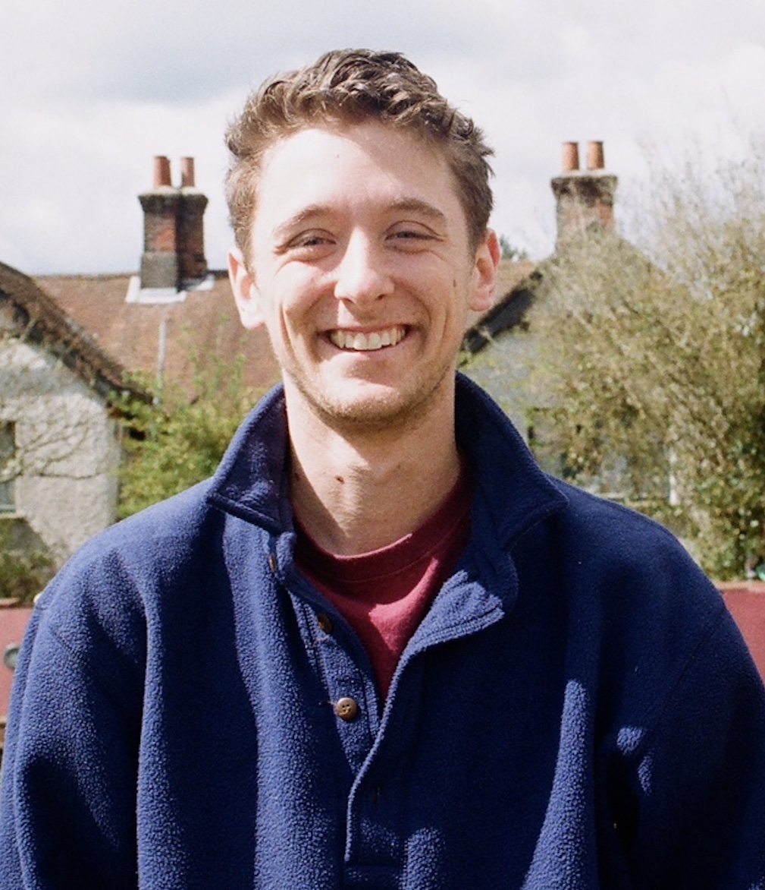

Aidan Penn

I'm a postdoc at the University of Fribourg in Switzerland. Starting Fall 2026, I'll be the Louis Skolnick Postdoctoral Research Associate at Princeton University. I received my PhD from NYU (2025), my BPhil from Oxford (2019), and my BA from Bowdoin College (2017).
Most of my work is in ethics, epistemology, and decision theory. My current research examines the ethics of uncertainty, prerogatives, incomparability, and higher-order uncertainty. I also work on AI ethics.
Here is my CV. I'm also on PhilPeople.
Papers
- Prerogatives Under Risk. Free & Equal (forthcoming).
- Opaque Options (with Kacper Kowalczyk). Philosophical Studies 181 (2024): 1837–1849.
- [a paper on higher-order uncertainty in ethics] (under review)
- [a paper on incomparability] (in progress)
- [a paper on AI fairness] (in progress)
Teaching
- Epistemology (primary instructor, Summer 2024)
- Metaethics (primary instructor, Summer 2022)
- The Meaning of Life (recitation instructor, Spring 2023)
- Ethics (recitation instructor, Fall 2022)
- Ethics and Society (recitation instructor, Spring 2022)
- Political Philosophy (recitation instructor, Fall 2021)